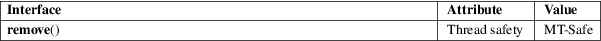

remove − remove a file or directory
Standard C library (libc, −lc)
#include <stdio.h>
int remove(const char *pathname);
remove() deletes a name from the filesystem. It calls unlink(2) for files, and rmdir(2) for directories.
If the removed name was the last link to a file and no processes have the file open, the file is deleted and the space it was using is made available for reuse.
If the name was the last link to a file, but any processes still have the file open, the file will remain in existence until the last file descriptor referring to it is closed.
If the name referred to a symbolic link, the link is removed.
If the name referred to a socket, FIFO, or device, the name is removed, but processes which have the object open may continue to use it.
On success, zero is returned. On error, −1 is returned, and errno is set to indicate the error.
The errors that occur are those for unlink(2) and rmdir(2).
For an explanation of the terms used in this section, see attributes(7).

C11, POSIX.1-2008.
POSIX.1-2001, C89, 4.3BSD.
Infelicities in the protocol underlying NFS can cause the unexpected disappearance of files which are still being used.
rm(1), unlink(1), link(2), mknod(2), open(2), rename(2), rmdir(2), unlink(2), mkfifo(3), symlink(7)